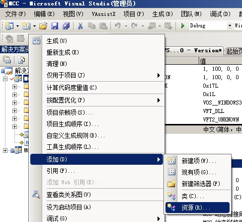
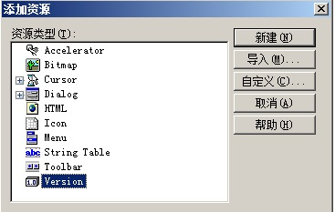
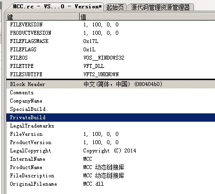
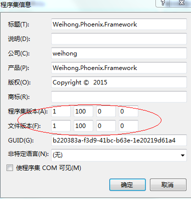

Phoenix 组件版本管理规则
版次：2016年9月5日 第1.0版
版次：2018年5月29日 第2.0版
类型：技术文件
作者：Phoenix 架构平台
上海维宏电子科技股份有限公司 版权所有
1. 定义版本号
主版本号.子版本号.修正版本号.保留版本号[-先行版本号[序号]]
Major.Minor.Revision.Reserve[-Preview[SerialNo]]
1.1 主版本号
具有相同名称但不同主版本号的 DLL 不可互换。这适用于对产品的大量重写，这些重写使得无法实现向后兼容性进而在架构的级别上对 dll 进行整体升级。
Phoenix 测试版版本号从 0 开始，正式版版本号默认从 1 开始，向后递加 1。
1.2 子版本号
副版本号由百进制数字 100 开始。 100 分为两部分：百进制数的"1"和十进制数的"00";
- 十进制：
范围
【00~~99】,表示对组件进行功能添加或修改或者功能的显著增强以及修订内容和范围比较广。十进制版本升级时，组件可以保证向上兼容。 - 百进制：
范围从【100~~900】,往往标识非常大的版本升级，通常接口会有变化， - 百进制升级时，组件不保证向上兼容。
- 百进制升级后，十进制必须从"00"开始。
1.3 修订版本号
当做了向下兼容的问题修正时修订版本号更新， 如果修订的内容、范围、影响足够广的话可以对子版本号进行兼容性升级并重置修订版本号。
1.4 预留版本号
预留版本号的原意是适应构建版本号或编译版本号， 因在现有 Phoenix 版本管理中语义比较弱，故清理掉以上版本语义用作保留版本号，默认为 0。
说明： 有必要的时候这个版本号要重新启用，如：相同源所作的重新编译。这适合于更改处理器、平台或编译器的情况。
1.5 先行版本号
先行版本号被标注在预留版本号之后，先加上一个连接号在加上特定语义的标识符来修饰。
先行版本的优先级低于相关联的标准版本，被标上先行版本则表示这个版本并非稳定版本而且可能无法达到兼容的需求。
目前支持的先行版本号有：
alpha: 开发测试版本号，满足一定功能需求，可以通过 Dev 分支发布。alpha1-alpha9: alpha 版本号支持序号升级，目前只支持1~9个版本号数量，超过请升级数字版本号。
警告： alpha版本软件一定不能用到生产环境。因为它是危险的，不保证质量、完整性、代码追溯，会出现意料不到的问题而没法修复。
补充说明：
为什么会有 alpha1-alpha9？
因为在开发阶段 Dev 版本可能会出现持续的 发布-集成-测试 工作，面对开发过程数字版本号的定义意义不大往往有浪费成本，所以 alpha+num 版本号能很好的解决测试问题。
2 项目版本号的设置
2.1 C++项目版本号
以 MCC 项目为例：右键 MCC 项目 - 属性 - 添加 - 资源 - 进入资源选择页面。

在资源选择页面选择 Version 条目 并双击添加版本资源。

选择版本资源后 进入版本编辑界面，修改里面上下两处文件版本信息， 产品版本信息要跟文件版本信息同步。

2.2 C# 项目版本号
定义版本号
如下图所示：右键项目属性 -->在“应用程序页面”下选择“程序集信息”按钮： 然后对公司信息和版本号进行填写：

修改完之后会在文件 AssembyInfo.cs 下面看到以下代码：
[assembly: AssemblyVersion("1.100.0.0")]
[assembly: AssemblyFileVersion("1.100.0.0")]
3. 关于语义化版本 2.0.0
在软件管理的领域里存在着被称作“依赖地狱”的死亡之谷，系统规模越大，加入的套件越多，你就越有可能在未来的某一天发现自己已深陷绝望之中。 在依赖高的系统中发布新版本套件可能很快会成为恶梦。如果依赖关系过高，可能面临版本控制被锁死的风险（必须对每一个相依套件改版才能完成某次升级）。 而如果依赖关系过于松散，又将无法避免版本的混乱（假设兼容于未来的多个版本已超出了合理数量）。 当你专案的进展因为版本相依被锁死或版本混乱变得不够简便和可靠，就意味着你正处于依赖地狱之中。
作为这个问题的解决方案之一，我提议用一组简单的规则及条件来约束版本号的配置和增长。这些规则是根据（但不局限于）已经被各种封闭、开放源码软件所广泛使用的惯例所设计。
为了让这套理论运作，你必须先有定义好的公共 API 。这可以透过文件定义或代码强制要求来实现。无论如何，这套 API 的清楚明了是十分重要的。
一旦你定义了公共 API，你就可以透过修改相应的版本号来向大家说明你的修改。考虑使用这样的版本号格式：XYZ （主版本号.次版本号.修订号）修复问题但不影响 API 时，递增修订号；
API 保持向下兼容的新增及修改时，递增次版本号；进行不向下兼容的修改时，递增主版本号。
我称这套系统为“语义化的版本控制”，在这套约定下，版本号及其更新方式包含了相邻版本间的底层代码和修改内容的信息。
当前版本号管理规范是基于语义化版本规则 2.0.0 和当前 Phoenix 团队的现状构建的，随着版本的升级会无效靠近语义化版本规则 2.0。
版本信息
| 版本 | 日期 | 修改人 | 修改内容 |
|---|---|---|---|
| 2.0 | 2018/5/29 | Phoenix 架构平台 | 1. 将3,4版本号序列由 <构建.修订> 更新为 <修订.保留>；2. 添加先行版本号； 3. 修订对部分版本号不明确的描述； 4. 添加对保留版本号的描述。 |
| 1.0 | 2016/9/5 | Phoenix 架构平台 | 初版建立 |